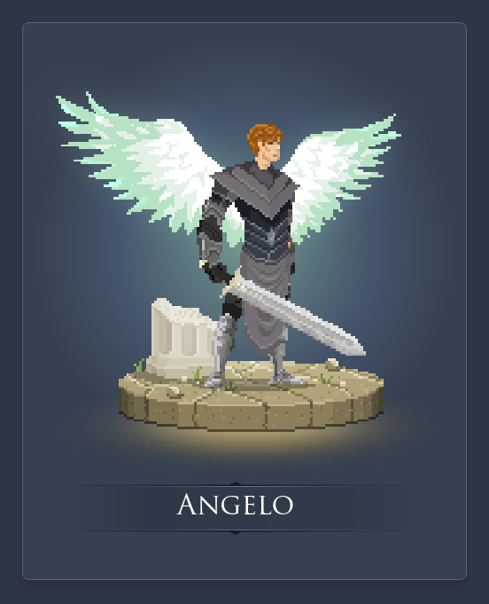
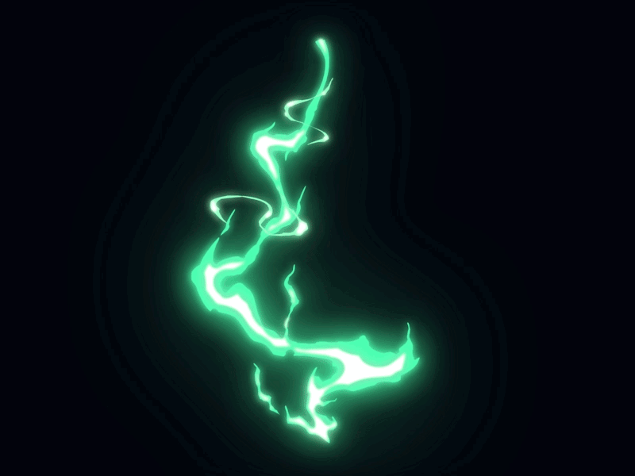

Escolha seu Personagen:
Habilidades
Passiva:Luz celestial: Ao atacar marca seu inimigo com a luz celestial, no próximo ataque causará 3% da vida máxima do alvo como dano mágico.

habilidade Q:Visâo sagrada: Revela todos os inimigos em até 1600 unidades.
Habilidade W:Estocada:Usa da arte da esgrima para avançar e atacar seu alvo causando dano físico.

Habilidade E:Expurgar:Utiliza do poder divino para expurgar todos os efeitos negativos e se cura em 10% da vida perdida.

Habilidade R:Julgamento Divino:Clama pelo poder de Deus para atingir seus inimigos causando dano verdadeiro baseado na vida perdida do alvo.
